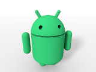
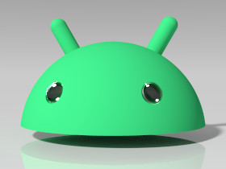
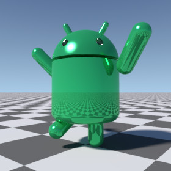

 AndroidRobot is a library module from the Persistence of Vision Raytracer (POV-Ray) Object Collection that defines a 3-D model of Google’s Android™ robot, with posable head and limbs.
In versions 5.0 and later, the head is available as a standalone object, and the official color is updated to its 2019 value. In version 6.0, the 2023 mascot design and some international spellings are added.
| Key Files | |
|---|---|
| File | Description |
androidrobot.html |
The user manual (this document) |
androidrobot.inc |
The AndroidRobot library |
androidrobot.povandroidrobot_head.povandroidrobot_posed.pov
|
Scene description files demonstrating use of AndroidRobot |
androidrobot.jpgandroidrobot_head.jpgandroidrobot_posed.jpgandroidrobot_thumbnail.png
|
Sample output images |
| Administrative Files | |
| File | Description |
androidrobot_description.txt |
A brief description of AndroidRobot |
androidrobot_keywords.txt |
A list of keywords |
androidrobot_prereqs.txt |
Prerequisites (empty file) |
androidrobot.css |
Formatting for this user manual |
Depending on where you obtained this library, there may be other administrative files included with this download, including one named README{series-of-digits}.html which contains important information about using the POV-Ray Object Collection. Please see the Object Collection User Guide if this file is not present.
Note for users of older versions of AndroidRobot: Files androidrobot_cc-lgpl.png and droid.pov are no longer used, and androidrobot.png has been replaced with androidrobot.jpg.
AndroidRobot requires POV-Ray version 3.5 or later.
All file names in this module and all global and local identifiers defined in androidrobot.inc comply fully with the Object Collection naming standards, as revised August 2008 and proposed August 2012. The files in this module may be safely stored in the same folder as other fully compliant Object Collection modules.
The reserved prefixes for this module are “AndroidRobot” and “Droid,” including any uppercase and lowercase variants. To avoid conflicts, do not introduce into your scene description file any identifiers with either of these prefixes as names, or any identifiers that start with either of these prefixes plus an underscore.
The identifier View_POV_Include_Stack from the standard include file debug.inc is referenced by androidrobot.inc, although debug.inc itself is not used.
assumed_gamma in global_settings{}.
global_settings { assumed_gamma 1.0 } is recommended.
assumed_gamma to any value other than 1.0 with a POV-Ray version older than 3.7, you must also set the global parameter AndroidRobot_Gamma equal to your assumed_gamma, prior to the next step, in order to set the official Android Web color properly. If your assumed_gamma is srgb, then set AndroidRobot_Gamma to 2.2.
assumed_gamma to some value prior to the next step, or you will get a parse error.
#include "androidrobot.inc"Including the file more than once is harmless, though unnecessary.
Creates an untextured robot. The robot faces the x-direction and the
bottom of the robot is at ANDROIDROBOT_V_BASE.
| Formal Parameter | Type | Description |
|---|---|---|
Use_merge |
float/Boolean | If yes, the robot will be composed using CSG merge. If no, then CSG union will be used. In general, pass yes if the robot is to be transparent, no otherwise. |
Returns a 3-D vector describing the dimensions of the eyes’ cylindrical sockets:
.x component is the rotation of the left eye about its x-axis. Of course, the right eye is rotated in the opposite direction.
.y component is the y radius prior to rotation.
.z component is the z radius prior to rotation.
Returns the point (vector) where the central axis of the left eye’s cylindrical socket intersects the dome of the head.
Returns the dome on which the robot’s head is based. This is useful for developing eyes or other facial features.
| Formal Parameter | Type | Description |
|---|---|---|
Outset |
float | An amount by which the dome is larger or smaller than the head. Zero returns a dome the same size as the head, a positive number returns a larger dome, and a negative number returns a smaller dome. |
Returns a transformation that is suitable for facial features. Apply this macro to facial features if you have applied a transformation to the robot’s head with macro AndroidRobot_Posed(). (Do not apply the head’s transformation directly to the facial features, as this will not work properly for some transformations.)
| Formal Parameter | Type | Description |
|---|---|---|
x_Head |
transformation | The transformation to be applied to the facial features. Typically, this should be the same as the x_Head argument passed to AndroidRobot_Posed(). |
union
{ AndroidRobot_Posed
( no, MyHeadRotation,
transform{}, transform{}, transform{}, transform{}
)
union
{ object { UserDefinedEye translate AndroidRobot_Eye_v() }
object { UserDefinedEye translate AndroidRobot_Eye_v() * <1, 1, -1> }
// transform { MyHeadRotation } // Wrong!
AndroidRobot_Head_x (MyHeadRotation) // Correct
}
pigment { ANDROIDROBOT_C_COLOR }
}
See the demo scene file androidrobot_posed.pov for a complete example.
Creates a disembodied robot head.  The head will be located at the same height and position as it would be as part of the entire robot.
| Formal Parameter | Type | Description |
|---|---|---|
Use_merge |
float/Boolean | If yes, the head will be composed using CSG merge. If no, then CSG union will be used. In general, pass yes if the head is to be transparent, no otherwise. |
Creates an untextured posable robot.

See the demo scene file androidrobot_posed.pov for an example of how to use this.
| Formal Parameter | Type | Description |
|---|---|---|
Use_merge |
float/Boolean | If yes, the robot will be composed using CSG merge. If no, then CSG union will be used. In general, pass yes if the robot is to be transparent, no otherwise. |
x_Head |
transformation | The transformation to be applied to the head. The origin is at the neck. |
x_Left_arm |
transformation | The transformation to be applied to the left arm. The origin is at the shoulder. |
x_Right_arm |
transformation | The transformation to be applied to the right arm. The origin is at the shoulder. |
x_Left_leg |
transformation | The transformation to be applied to the left leg. The origin is at the hip. |
x_Right_leg |
transformation | The transformation to be applied to the right leg. The origin is at the hip. |
Sets the values of the Android Web color variables ANDROIDROBOT_C_COLOR and ANDROIDROBOT_C_RAWCOLOR. Google has changed the official color, and this macro allows you to revert to previous colors.
| Formal Parameter | Type | Description |
|---|---|---|
Version |
float |
|
Note: Although the graphic on the Android branding page as of early 2025 uses #34A853 , equivalent to srgb <52,168,83>/255, the official Web color is still specified as #3DDC84 .
| Parameter | Type | Description | Default |
|---|---|---|---|
AndroidRobot_Gamma |
float |
It is recommended to set However, if you set This parameter is ignored if |
1.0 |
AndroidRobot_Version |
float | A backwards compatibility setting to select the modeling of the robot according to the version of AndroidRobot:
This parameter may be #declared by the user prior to using the macros, and changed at any time. When |
6.0 |
| Identifier | Type | Description | Value |
|---|---|---|---|
ANDROIDROBOT_C_COLOR |
color | The gamma-decoded official Android Web color. Use this if:
Warning: If you are using POV-Ray 3.62 or older, |
the equivalent of #3DDC84 *
|
ANDROIDROBOT_C_RAWCOLOR |
color | The official Android Web color, without any gamma decoding. Use this if:
|
rgb <61, 220, 132> / 255 *
|
ANDROIDROBOT_HEIGHT |
float | The height of the unposed robot, not including the antennae. | 1.65 |
ANDROIDROBOT_V_BASE |
3-D vector | The location of the bottom of the unposed robot. | <0, -0.55, 0> |
* These values will be different if AndroidRobot_Version is set to less than 5.0 before including androidrobot.inc, and may be changed at any time by calling macro AndroidRobot_Set_Color().
The short prefix from AndroidRobot 1.0 has been reinstated as of version 4.0. The following table lists the identifiers that have short form alternatives and other synonyms.
| Long Form | Short Form | Other Synonyms |
|---|---|---|
AndroidRobot |
Droid |
|
ANDROIDROBOT_C_COLOR |
DROID_C_COLOR |
ANDROIDROBOT_C_COLOUR, DROID_C_COLOUR |
ANDROIDROBOT_C_RAWCOLOR |
DROID_C_RAWCOLOR |
ANDROIDROBOT_C_RAWCOLOUR, DROID_C_RAWCOLOUR |
AndroidRobot_Eye_Radii_v |
Droid_Eye_Radii_v |
|
AndroidRobot_Eye_v |
Droid_Eye_v |
|
AndroidRobot_Head |
Droid_Head |
|
AndroidRobot_Head_x |
Droid_Head_x |
|
ANDROIDROBOT_HEIGHT |
DROID_HEIGHT |
|
AndroidRobot_Make_Head |
Droid_Make_Head |
AndroidRobot_Make_head, Droid_Make_head |
AndroidRobot_Posed |
Droid_Posed |
AndroidRobot_posed |
AndroidRobot_Set_Color |
Droid_Set_Color |
AndroidRobot_Set_color, AndroidRobot_Set_Colour, AndroidRobot_Set_colour, Droid_Set_color, Droid_Set_Colour, Droid_Set_colour |
ANDROIDROBOT_V_BASE |
DROID_V_BASE |
|
The following identifiers have no short form:
These macros are not suited for the 2023 logo redesign. They may still be used for older versions of the robot; or the .y or .z component from macro AndroidRobot_Eye_Radii_v() may be used for the same effect.
Any identifiers in androidrobot.inc that are not documented in this manual are considered “private,” and are subject to change or elimination in a future update.
The SDL code is copyright © 2009 Karl Ostmo and © 2011 – 2025 Richard Callwood III. Some rights reserved.
This library is free software: you can redistribute it and/or modify it under the terms of the GNU Lesser General Public License as published by the Free Software Foundation, either version 3 of the License, or (at your option) any later version.
This library is distributed in the hope that it will be useful, but WITHOUT ANY WARRANTY; without even the implied warranty of MERCHANTABILITY or FITNESS FOR A PARTICULAR PURPOSE.
Android is a trademark of Google LLC. The Android robot is reproduced or modified from work created and shared by Google and used according to terms described in the Creative Commons 3.0 Attribution License.
| Version | Date | Notes |
|---|---|---|
| 1.0 | 2009 October 30 |
|
| 2.0 | 2011 July 23 |
|
| 2.1 | 2012 June 26 |
|
| 2.1a | 2012 June 28 |
|
| 2.2 | 2014 October 5 |
|
| 3.0 | 2015 April 25 |
|
| 3.0a | 2015 April 27 |
|
| 4.0 | 2018 September 23 |
|
| 4.0.1 | 2019 March 21 |
|
| 5.0 | 2020 September 19 |
|
| 5.0A | 2021 August 14 |
|
| 6.0 | 20?? ??? ?? |
|
{kind=link}